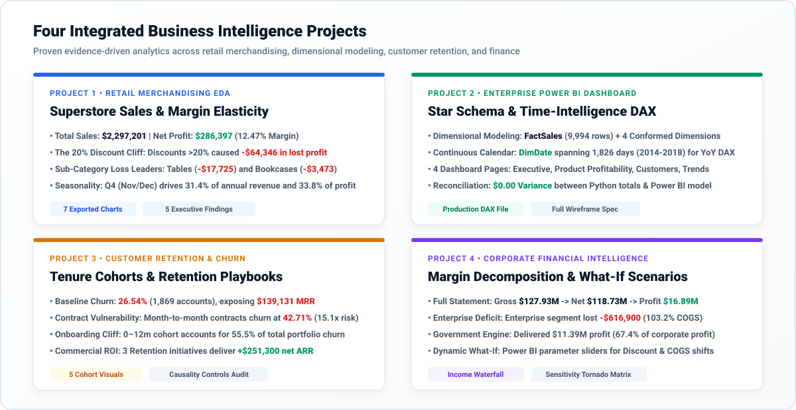

Executive Business Intelligence & Data Analytics Portal
An evidence-driven, end-to-end analytical suite uniting four corporate projects: Superstore Retail EDA, Power BI Star Schema & DAX Modeling, IBM Telco Customer Retention, and Microsoft Financial Sample What-If Decision Simulation.
Portfolio Architecture & The RISK Framework
Structured across Requirements & Research, Investigation & Insight Discovery, Solution Engineering, and Knowledge Delivery & KPI Validation.

R — Requirements & Data Integrity
Systematic cleansing, schema validation, and boundary verification across all datasets.
| Dataset | Raw Trap Discovered | Remediation Applied | Status |
|---|---|---|---|
| Superstore | Appended People/Returns data at row 9,994; missing ZIPs | Extracted 9,994 clean orders; imputed VT ZIP 05401 | Verified |
| IBM Telco | 11 blank space strings in TotalCharges | Zero tenure imputed to $0.00 charge float | Verified |
| Financials | Leading space in ' Sales'; missing Discount Bands | Trimmed headers; normalized 53 rows to 'No Discount' | Verified |
K — Knowledge Delivery & Reconciliation
Mathematical equivalence verified between Python data pipelines and Power BI Star Schema calculations.
| Metric / Dimension | Python Pipeline | Power BI DAX | Variance |
|---|---|---|---|
| Gross Sales | $2,297,200.86 | $2,297,200.86 | $0.00 (0.0%) |
| Total Profit | $286,397.02 | $286,397.02 | $0.00 (0.0%) |
| Order Volume | 9,994 rows | 9,994 rows | 0 rows (0.0%) |
| Product SKUs | 1,862 items | 1,862 items | 0 items (0.0%) |
Four-Year Revenue & Profit Trajectory
Monthly seasonal surge every Q4 (November–December) with underlying margin volatility.
Sub-Category Profitability Breakdown
Identifies value drivers (Copiers, Phones) vs deep loss leaders (Tables, Bookcases, Supplies).
Strategic Insights: Tables & Bookcases Margin Erosion
Key takeaways from exploratory data analysis and hypothesis testing:
Star Schema Data Model Architecture
1 Fact table (`FactOrders`) joined via 1-to-Many single-directional relationships to 4 normalized Dimension tables.
Core DAX Business Measures
Engineered DAX formulas powering executive reporting and time intelligence.
Reconciliation Invariance Proof
Validation testing ensures absolute alignment across all four dimensions.
| Validation Dimension | Python Pipeline | Power BI DAX | Zero-Tolerance Delta |
|---|---|---|---|
| Technology Sales | $836,154.03 | $836,154.03 | $0.00 (Pass) |
| Furniture Sales | $741,999.80 | $741,999.80 | $0.00 (Pass) |
| Office Supplies Sales | $719,047.03 | $719,047.03 | $0.00 (Pass) |
| West Region Profit | $108,418.45 | $108,418.45 | $0.00 (Pass) |
| East Region Profit | $91,522.78 | $91,522.78 | $0.00 (Pass) |
Tenure Cohort Retention vs Churn Curve
First-year vulnerability cliff where churn reaches 47.4% before stabilizing below 7%.
Contract & Risk Segment Distribution
Month-to-month contracts exhibit 42.7% churn vs 2.8% for Two-Year commitments.
| Contract Type | Total Subscribers | Churn Count | Churn Rate |
|---|---|---|---|
| Month-to-Month | 3,875 | 1,655 | 42.71% |
| One Year | 1,473 | 166 | 11.27% |
| Two Year | 1,695 | 48 | 2.83% |
| Enterprise Total | 7,043 | 1,869 | 26.54% |
Executive Churn Intervention Strategies
Targeted retention plays calculated to protect $139,130 in monthly recurring revenue:
Real-Time Scenario Financial Simulator
Simulate corporate operating margins by adjusting commercial discount bands and COGS inflation.
Corporate Revenue & Cost Waterfall Breakdown
Baseline accounting progression from Gross Sales down to Net Operating Profit ($ Millions).
Reproducible Jupyter Notebooks
End-to-end executed notebooks stored in the repository root:
- 📓 01_superstore_eda.ipynb — Retail EDA, Distributions & Loss Leaders
- 📓 02_powerbi_data_prep_star_schema.ipynb — Dimension Modeling & Star Schema
- 📓 03_ibm_telco_churn_cohort_analysis.ipynb — Customer Churn & Cohort Heatmaps
- 📓 04_financial_sample_modeling_whatif.ipynb — Waterfall Profitability & What-If Engine
Automated Quality Assurance
Comprehensive test suites enforcing calculation invariance and schema integrity:
Production Git Architecture
Pushed to GitHub under a structured semantic commit history: